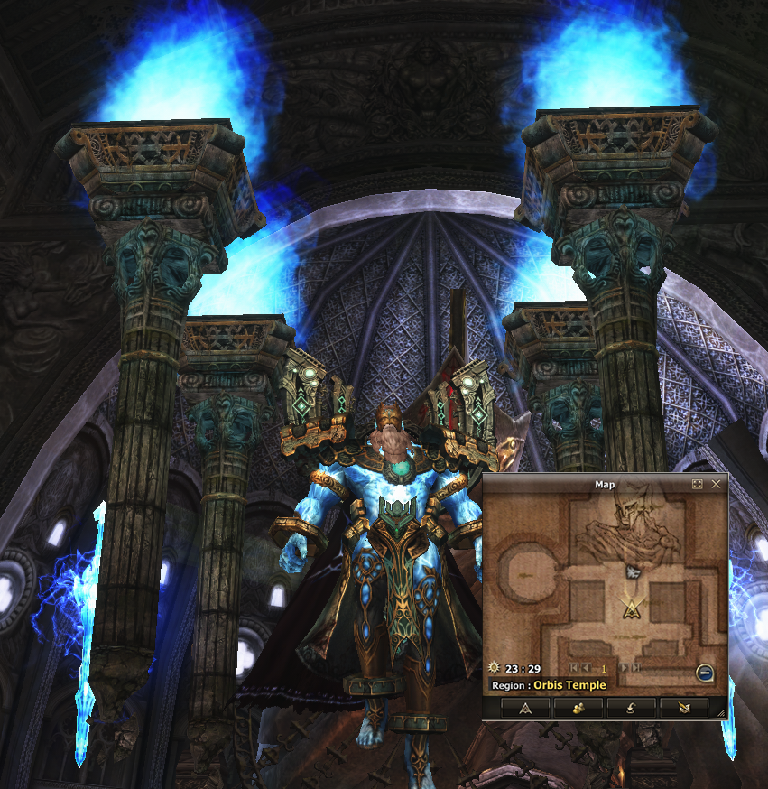
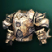
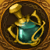
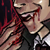
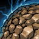
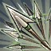
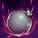

General Information
Overview
Age of Splendor represents a carefully crafted fusion of Lineage II's most beloved elements throughout its history. We have meticulously selected the finest features from multiple game versions: the cherished familiarity of Interlude, the enduring legacy of High Five, and the innovative developments from Essence - all built upon a modernized, stylized Classic foundation. Our vision extends beyond the traditional Classic experience, offering a uniquely refined journey that combines nostalgia with contemporary gaming excellence.
Experience the pinnacle of Lineage II evolution - where legacy meets innovation.
| Client | Assassin (Classic Remastered) |
| Maximum Windows | 2 per HWID |
| Protection | Active Anticheat |
| Buff Slots | 20 + 4, 12 Dances/Songs |
| Buff Time | 4 Hours |
| Mana Potions | 50 MP/sec for 10 sec. |
| Shops | Up to mid C-Grade (Luxury Shop) |
| Players per party | 7 members |
| Players per clan | 100 members |
| Players per command channel | 56 members (8 parties) |
Changes to Existing Systems:
- No Death Knight / Sylph / Ertheia / Vanguard/ High Elves / Wolf
- Vampiric rage skills are 50% effective for ranged attacks and skills, 33% effective for AoE skills
- Community Board buffer available
- Magic Lamp has been disabled
- Random Crafting has been disabled
- More skills have been added to auto-use
- Autofarm will not target players while in mass PvP
- Elemental Spirits have been reworked into Attribute Stones
- Content for EU and SA players scheduled daily
Rates
Age of Splendor is a server dedicated to delivering an authentic long-term gameplay experience. We've thoughtfully extended the initial game phase to create a more balanced progression journey, allowing players to fully immerse themselves in every aspect of Lineage II's rich content. This measured approach ensures that each milestone feels rewarding and meaningful, while maintaining the game's competitive spirit. Progress at your own pace, knowing that every achievement carries lasting value in our carefully crafted world.
| Experience | x3 |
| Skill Points | x3 |
| Adena | x3 |
| Quest | x1 |
| Drop | x1 |
| Spoil | x1 |
| Raid Experience | x0.25 |
| Raid Drop | x1 |
Buffs System
The buff system has been reworked to streamline effects and save slots. Character buff slots are capped at 20 + 4, and buffs received from the buffer last for 4 hours. All enchanter and support classes have received new Poems, Harmonies, and Dances/Songs, and the buffs can also be received via the Game Assistant. The reworked buffs affect the entire party and last for 20 minutes.
Buffs have been categorized into the following groups:
— Poems and Harmonies - combine the effects of 2-3 normal buffs
— Improved Songs and Dances - combine the effects of 2-3 normal songs and dances
Attribute System
The Attribute System has been completely reworked, transitioning from Attribute Spirits to the new Attribute Stones. These powerful stones can be obtained by participating in special raids or by exploring the Chromatic Highlands and Garden of Genesis. Each Attribute directly correlates to your character's skills and elemental affinity. Players can visit Attribute Master Yin in Aden Town to exchange their collected Attribute Stones and Potions for valuable enhancements.
| Fire Crystal | Adds +5 Fire Attack to a weapon or +6 Water Resistance to an armor | |
| Water Crystal | Adds +5 Water Attack to a weapon or +6 Fire Resistance to an armor | |
| Wind Crystal | Adds +5 Wind Attack to a weapon or +6 Earth Resistance to an armor | |
| Earth Crystal | Adds +5 Earth Attack to a weapon or +6 Wind Resistance to an armor | |
| Holy Crystal | Adds +5 Holy Attack to a weapon or +6 Dark Resistance to an armor | |
| Dark Crystal | Adds +5 Dark Attack to a weapon or +6 Holy Resistance to an armor | |
| Fire Attack Potion | Increases +50 Fire Attack for 20 minutes | |
| Water Attack Potion | Increases +50 Water Attack for 20 minutes | |
| Wind Attack Potion | Increases +50 Wind Attack for 20 minutes | |
| Earth Attack Potion | Increases +50 Earth Attack for 20 minutes | |
| Holy Attack Potion | Increases +50 Holy Attack for 20 minutes | |
| Dark Attack Potion | Increases +50 Dark Attack for 20 minutes |
The following applies to Attribute Stones:
— Only one attribute is allowed per item
— Attributes cannot be used on temporary items
— Attributes cannot be used on hair accessories
— Attributes give the opposite effect for armor
— Attributes are displayed in an item's tooltip
— Attributes can be viewed in Alt + T and will be highlighted
— The highest level of an Attribute is Lv. 4
Subclass System
Subclasses allow your character to master additional roles while maintaining their primary class and character. By unlocking a subclass, you can experience different playstyles and skills without creating a new character. Each subclass functions as a separate progression path, complete with its own level progression, skills, and equipment options. This versatile system enables players to adapt to different combat situations and enjoy multiple aspects of gameplay on a single character.
Subclasses can only be received when the following conditions are met:
— The character is Lv. 75 and above
— All subclasses must be Lv. 75 and above
— No more than 3 Subclasses
— Completed the quest Fate's Whisper (Lv. 75+) from Maestro Reorin
— Subclass levels are accounted for in the Keystone Forge
— There are no Certification skills
— Subclass levels are not accounted for in the player ranking system
— Subclasses cannot be used in the Olympiad
— Hero skills are available on subclasses
Keystone Forge

As players progress and gain levels (starting from Lv. 76 with the third class change completed, they unlock powerful mastery points. Using these points in the Keystone Forge, players can enhance their character's abilities to perfectly complement their chosen playstyle. There are three distinct mastery trees to choose from:
— Ferocity for offensive prowess, empowering your damage output
— Resolve for defensive capabilities, strengthening your survivability
— Cunning for tactical advantages and enhances your strategic options
Each tree offers unique bonuses and abilities that align with its theme. Players can customize their build by distributing points across these trees, creating a character that truly reflects their preferred combat approach.
Ferocity Keystones
| Warlord's Bloodlust | Killing an enemy player increases PvP Damage by +1% for each stack (up to 15 stacks) for 10 seconds. All stacks are lost on death | |
| Conqueror | Dealing damage to enemy players increase P./M. Atk. by +0.5% for each stack (up to 10 stacks) for 5 seconds. At 10 stacks, additionally increases PvP Damage by +5% | |
| Thunderlord's Decree | Your third damaging spell within 3 seconds against the same target in 3 seconds calls down a lightning strike, dealing magic damage in a area (Cooldown: 20s) |
Resolve Keystones
| Grasp of the Undying | Periodic attacks/skills against the enemy will heal you for up to 7.5% of your missing HP and deal additional magic damage (Cooldown: 5s) | |
| Aftershock | Immobilizing (stun, paralyze, root, imprison) enemy players will deal damage to them in the area, and increase your P./M. Def. by +30% for 10 seconds (Cooldown: 30s) | |
| Guardian | When dropping below 30% HP, generate a shield absorbing up to 25% of your Max HP for 15 seconds (Cooldown: 2 min) |
Cunning Keystones
| Stormraider's Surge | Your third damaging spell within 3 seconds on the same enemy will cleanse you of all slowing effects and increase your Movement Speed by +50% for 5 sec. (Cooldown: 25s) | |
| Summon Yukiho | Every 5th spell cast will summon Yukiho. When used on an enemy, she will deal additional damage. When used on an ally, she will come to aide and give a bonus heal. | |
| Glacial Augment | Immobilizing (stun, paralyze, root, imprison) enemy players will spread a frost blast around them, slowing enemies for 30% for 10 sec. (Cooldown: 30s) |
The following rules apply to the Keystone Forge:
— You can earn 1 point for each level above Lv. 76
— A maximum of 30 points can be earned in total
— A limit of 18 points can be allocated into a single category
— Only one sub-mastery can be selected per row within the same category
— You may select only one Keystone in total
— Points can be reset and redistributed for a small SP fee
— Additional points are granted based on your subclass levels
Access the Keystone Forge through either the Character Status window (Alt+T) or the Alt+X menu.
Raid / Epic Bosses
Standard Bosses
Standard bosses spawn all around the map, and will follow the standard raid boss spawn template. They will be available after after a certain amount of time after they are killed and do not have any modifications to their rewards or difficulty.
| Lv. 20-69 Raid Bosses | 16 hours, +- 1 hours respawn | |
| Lv. 70-80 Raid Bosses | 24 hours, +- 2 hours respawn |
Field Bosses
Field bosses are spawned daily at 20:00 and 02:00. Field bosses are designed for clans and groups to compete and have constant action, along with gaining an upper edge for the victor!
— Lv. 60-68: Evil Magikus, Rael Mahum Radium/Supercium, Tayga Feron/Marga/Septon
— Lv. 65-73: Fiends Goblier/Cherkia/Harthemon/Sarboth, Demon Bedukel, Bloody Witch Rumilia
— Lv. 70-78: Evil Orcs Zetahl/Tabris/Ravolas/Dephracor, Amden Orcs Turahot/Turation
— Lv. 75-83: Gariott, Varbasion, Varmoni, Overlord Muscel, Bathus Elbogen, Daumen Kshana
| Lv. 60-68 Field Bosses | Fields of Massacre | |
| Lv. 65-73 Field Bosses | Ancient Battlegrounds | |
| Lv. 70-78 Field Bosses | Forsaken Plains | |
| Lv. 75-83 Field Bosses | Silent Valley |
Epic Bosses
Epic bosses have all been set to Lv. 80+ and also have increased difficulty and rewards in order to compensate for their weekly respawn times. We have decided to follow through with this change to allow clans and other players to see these bosses as events and play around their times strategically. We have chosen these specific times to benefit players from around the world so everybody can have a chance to participate in the battles to come.
For epic bosses, everyone who deals damage over 5,000 damage will receive Damaged Jewel Packages and Event Medals for their participation, providing an additional incentive for all players to join the fray and contribute to the battle.
| Queen Ant Lv. 80 | Mondays 21:00 GMT +2 Mondays 21:00 GMT -3 |
|
| Core Lv. 80 | Tuesdays 21:00 GMT +2 Tuesdays 21:00 GMT -3 |
|
| Orfen Lv. 80 | Wednesdays 21:00 GMT +2 Wednesdays 21:00 GMT -3 |
|
| Zaken Lv. 82 | Thursdays 21:00 GMT +2 Thursdays 21:00 GMT -3 |
|
| Baium Lv. 82 | Fridays 21:00 GMT +2 Fridays 21:00 GMT -3 |
Epic bosses will also drop Epic Essence, which can be used in Special Craft to trade for various Dolls and Jewelery. They are given to all players who participated, and can be received from Weekly Missions.
| Epic Bosses | Drops x5 | |
| Epic Priests | Drops x1 | |
| Weekly Missions | Drops x1 |
Epic Priests
Epic Priests will spawn based on the epic boss. They will appear after the epic boss is defeated and have a lower chance to drop their jewels. This mechanic adds an extra layer of challenge and excitement to the game, encouraging players to strategize and collaborate even after the main battle. They will remain for 60 minutes and will disappear if not killed.
| Queen Ant Drone Priest | Spawned from Queen Ant | |
| Priest of Core Decar | Spawned from Core | |
| Priest Orfen Lord Ipos | Spawned from Orfen | |
| Angel Priest of Baium | Spawned from Baium | |
| Zaken's Commandant Mary Reed | Spawned from Zaken |
Mythic Bosses
Mythic bosses have been set to Lv. 80+ with increased difficulty and rewards to compensate for their weekly respawn times. These bosses are community events, where everyone who deals damage receives Mythic Shards, redeemable in the Hunter's Village. This change encourages clans and players to plan strategically around these events. We’ve scheduled these times to accommodate players globally, ensuring everyone has a chance to participate.
| Freya Lv. 80 | Tuesdays 22:00 GMT +2 | |
| Beleth Lv. 80 | Thursdays 22:00 GMT -3 | |
| Satina Lv. 85 | 24 hours, +- 8 hours respawn |
In order to challenge Mythic bosses, you can teleport to them via Alt+F or from the NPC Leslie in the Hunter's Village. You can also see the list of Mythic Bosses from the UI that will appear when Mythic Bosses are active, or from the Alt+X menu.
Instances
Kamaloka
A rift between worlds has opened, and the emissaries of righteousness have been sent down to seek assistance in order to close it! The Kamaloka is split between the Hall of the Abyss and the Labyrinth of the Abyss. The Hall of the Abyss is easier and for levels ending with 3 and 6. The Labyrinth of the Abyss is the final stage for the level range, and can only be taken by levels ending with 9.
Information:
- Only one party can enter (between 2 and 7 players)
- Parties are given 30 minutes to complete the instance
- Instance reuse is reset daily at 06:30 CEST, unless a Kamaloka Reset Stone or Labyrinth of the Abyss Reset Stone is used
- Instance reuse is grouped between Hall of the Abyss and Labyrinth of the Abyss. Once you enter a hall, you may not enter another for the remainder of the day
- Instances are available up until you are 5 levels or higher than the listed level
| Captain Jeronin Lv. 23, 26, 29 |
Town of Gludio |
| Captain Lucas Lv. 33, 36, 39 |
Town of Dion |
| Captain Gosta Lv. 43, 46, 49 |
Town of Giran |
| Captain Mouen Lv. 53, 56, 59 |
Town of Oren |
| Captain Kurtiz Lv. 63, 66, 69 |
Town of Aden |
| Captain Mathias Lv. 73, 76, 79, 81+ |
Town of Goddard |
Epic Boss Instances
Participate with your group in daily instances which can grant great rewards. Instances are divided between group (party), clan and command channel. Each type have their own set of instances are requirements. You can enter by visiting the following NPC's in Aden Castle Town.
Group instances reset daily at 06:30 CEST, while clan and command channel instances reset weekly at Wednesday 06:30 CEST.
— Group Instances (2-7 players): Battle with Queen Ant, Battle with Orfen, Battle with Core, Battle with Zaken
— Clan Instances (7-70 players): Clan Arena (clans must be Lv. 3+ to enter)
— Command Channel Instances (7-70 players): Battle with Frintezza, Battle with Baium, Battle with Antharas, Sanctum of Spirits
Sanctum of Spirits Instance
The presence of Spirits is strong, and it seems that this is the place where the energy is coming from. Challenge each of the Spirit Lords before the portal closes and absorb their energies.
- The Sanctum of Spirits is an instanced zone
- The Sanctum of Spirits is recommended for groups Lv. 76 and higher
- Once you enter, there is 30 minutes to complete the instance or all members will be removed
- The reuse for this instance resets every week at Wednesday, 06:30 AM (server time)
- Available for groups and Command Channels 14 members or more
Goldberg Instance
Goldberg's room is a challenging and temporary hunting zone designed for characters Lv. 78 and above. Accessible only by forming a party, it promises thrilling battles and rich rewards.
- You can enter by talking to Sora in Aden
- You can only enter in a group of 2 to 7 members. The more members, the more rewards
- To enter, the party leader must have in their inventory  Goldberg's Room Key, which can be obtained from the monster Goldberg's Steward in the Tomb of the Ancient Pirates special zone
Goldberg's Room Key, which can be obtained from the monster Goldberg's Steward in the Tomb of the Ancient Pirates special zone
- You have 20 minutes to defeat Goldberg
Heavenly Rift Instance
The Heavenly Rift is a special instance in which you are placed against three challenges, all of which yield different rewards. This instance is highly contested, therefore it is important to prepare and keep note of its timers and players.
- You can enter by talking to Dimensional Vortex in the Tower of Insolence (Floor 1)
- The area around the vortex is a Combat Zone
- You can only enter in a group of 2 to 7 members. All members must be alive, and close to the vortex
- To enter, the party leader must have in their inventory Celestial Shard, which can be obtained from Suspicious Stone which drops from all monsters the Tower of Insolence (Floors 7-12)
- After a party has entered, there is a 20 minute delay before the next party can enter
| Dragon's Treasure | Defeat the dragon guarding its treasures for a chance to gain Cloth Piece and A-Grade Armor/Jewel Boxes |
|
| Tower Defense | Defend the tower against Possessed Angels and gain Life Control Tower's Blessing Scroll |
|
| Angel Eradication | Defeat the Possessed Angels for a chance to gain A-Grade Weapon Boxes |
Castle Siege
Information
Sieges are an iconic part of Lineage II, bringing back nostalgic memories of epic battles on the plains of Aden and Elmore and breaching the gates to the castle. Sieges will take place every Sunday and last for two hours (1 hour for preparation, 1 hour for the siege). The winner of the siege will be granted a special passive skill and circlet, along with the Lord's Crown giving addition bonuses. Giran is aimed towards European and Asian players, while Goddard is aimed towards American (North and South) players.
— Clans will be able to register 1 hour before the siege starts (at 20:00 for their respective times)
— The winning clan will earn 10,000 Clan Reputation points.
— Giran Castle will be available for siege every Sunday at 21:00 GMT +2.
— Goddard Castle will be available for siege every Sunday at 21:00 GMT -3.
| Castle Lord's Benefaction | Exp./SP +20%, Adena +10% | |
| Castle Circlet | Resist Shock Lv. 2 | |
| Lord's Crown | Equivalent to Circlet of Splendor +7 |
Olympiad
Information
To minimize the risk of match-fixing, the fights for Hero status are concentrated on Saturday every week. Heroes must satisfy the following conditions to be declared one:
Olympiad games are only held for main classes and begin on Saturday only:
— Hero statuses are distributed every Sunday
— Hero Weapons will give adaptive power based on the pace of the server
— Hero Cloak has been disabled
— There are no matches in the Olympics on Sunday so players can focus on the Siege
— The rewards from the Olympiad store and daily missions have been updated
— Participants are moved at random times to make match-fixing difficult
— Viewing points and Olympiad ranking has been hidden
| Period | 20:00 - 02:00 (GMT +2) |
| Registration | 4 participants (minimum) |
| Max Games | 50 games per week |
| Min. Level | Lv. 70 |
| Terms | Completed 10 fights, including one win, above 10 points |
| Prizes | Hero status for a week for the first in the class |
Rewards
| Rank | Min. Points | Reward |
| Rank 1 | 200+ Points | x4,000 Mark of Battle |
| Rank 2 | 80+ Points | x1,600 Mark of Battle |
| Rank 3 | 50+ Points | x1,000 Mark of Battle |
| Rank 4 | 30+ Points | x600 Mark of Battle |
| Rank 5 | 15+ Points | x100 Mark Of Battle |
— The following changes have been made to these items:
| Wings of Destiny | Equivalent to Circlet of Splendor +7 | |
| Infinity Crusher | - |
Seasonal Events
The following seasonal events have been enabled to allow players to interact with the game in different ways and create new viable methods of farming. Players can exchange their event items through the UI or designated NPCs for rewards.
— At the end of the events, all event items will be automatically deleted from players.
| Event | Description | Start | End | |
| Master Yogi | Master Yogi has came to display his prowess in the art of enchanting. Enchant his staff and return for a reward. |
28/06/2024 | 28/07/2024 | |
| Little Mouse | Alexandru has arrived in our lands and is begging for Cheese! Choose to ignore or feed the little mouse and see what awaits. |
28/06/2024 | 28/07/2024 | |
| Letter Collector | Collect letters from monsters around the world. Rewards can be obtained through the UI. |
28/06/2024 | 28/07/2024 | |
| Chocolate Thief | Collect Chocolates for Chocolatier Marshmallow. Combine and trade Chocolate Dolls for rewards. |
28/06/2024 | 28/07/2024 | |
Hourly Events
The following hourly events have been enabled to allow players to interact with the game in different ways along with creating new viable ways of farming. Players will be able to exchange their event items through the UI or designated NPC's for their reward.
- Event Medals can be obtained from events and used to purchase various items in the Game Assistant.
| Event | Type | Times | |
| Team Vs Team | Teamed | N/A | |
| Hunting Grounds | Teamed | N/A | |
| Domination | Teamed | N/A | |
| Capture the Flag | Teamed | N/A | |
| Fight for the Throne | Teamed | N/A | |
| Deathmatch | Solo | N/A | |
| Last Survivor | Solo | N/A | |
| Goblin Invasion | Solo | N/A | |
| Gladiators | Solo / Teamed | N/A | |
Game Assistant
Information
The Game Assistant can be found in all towns and villages, along with the UI. The Game Assistant is vital to Age of Splendor, as she holds the ability to trade special items, services, and buffs.
The following functions can be found at the Game Assistant:
— Exchange Coupons for various weapons, armors, jewels, cloaks and Agathions from donations, Starter Packs or events
— Exchange Soulshot Tickets for Soulshots/Blessed Spiritshots
— Purchase Spellbooks (2nd-3rd class)
— Exchange Raid Points, Gem Fragments, Agathions/Bracelets and more
— Add or remove Augment and Soul Crystals
— Share items within account (freight)
— Access to Mentorships
Mentoring
Mentorships are a great way to be rewarded for inviting and playing with friends! Rewards can only be collected once per unique address. This system is designed to help new players get started and to reward those who help grow our community.
Players are eligible to assign a mentor if they are:
— Lv. 20 or below
— Have spent under 30 minutes in the game
As a mentee, you will gain rewards based on the conditions met. Once a condition is met, your mentor is notified of your progress and they will be able to receive their reward as well. A mentee is able to unassign their mentor at any time. Happy hunting!
Cosmetics
Beauty Shop
La Vie En Rose's Beauty Shop is once again open for business! After her adventurous journey through the lands of Gracia and the outer dimensions, she has returned to Aden and Elmore to share the gift of beauty with clients throughout the realm. The renowned stylist brings with her new techniques and styles gathered from her travels across distant lands.
You can access the Beauty Shop by visiting La Vie En Rose in any major town, where she offers a wide range of customization options including hairstyles, facial features, and makeup designs. Transform your appearance and stand out in the world with her exclusive beauty services.
— Beauty Shop hairstyles will be covered when a hair accessory is worn
— Beauty Shop designs are limited, more will possibly be added
| Beauty Shop Ticket | Item required to purchase Beauty Shop styles |
Appearances
We believe your character should look as stylish as it performs, and with that in mind, we are introducing the Appearances system. This feature allows you to change the appearance of equipped items to special costumes or armor sets from previous chronicles.
The following Appearance options are available for customization:
• Armor
• Weapons
• Cloaks
• Shields
• Hair Accessories
| Standard | Common items from C1-C4 | |
| Advanced | Items from C5-Interlude or common costumes | |
| Rare | Items from Gracia-High Five or rare costumes | |
| Legendary | Item from GoD and stylish costumes | |
| Mythic | Exclusive items or epic boss costumes with a special effect |
— Appearances do not give any additional bonuses other than cosmetic purposes
— You can hide the skins of other players through the options menu.
— Appearances can be accessed through the Alt+X menu
Zones Updates
Zone Changes

The following changes have been made to these zones to better fit our concept:
— Varka Silenos Stronghold: Reduced monster difficulty and experience and rewards. Changed top A-Grade drops to low A-Grade weapon drops
— Ketra Orc Outpost: Reduced monster difficulty and experience and rewards. Changed top A-Grade drops to low A-Grade weapon drops
— Hot Springs: Increased monster difficulty and reward. Added low A-Grade weapon drops
— Imperial Tomb: Reduced monster difficulty and experience and rewards. Changed top A-Grade drops to mid A-Grade weapon drops
— Devil's Isle: Offlike with night and Zaken's Curse mechanic
— Giant's Cave: Reduced monster difficulty and rewards. Added low A-Grade weapon drops
— Attribute Zones have been Removed
— Forgotten/Primeval Isle have been Removed
— Catacombs and Necropoli have been Removed
Clan Strongholds
Clan Strongholds have been added to multiple hot spots (popular hunting zones) to better promote PvP and clan activity. The Clan Strongholds do not affect solo play.
— Capture a Clan Stronghold by speaking with it.
— The title and crest of the Clan Stronghold will reflect its owner's clan, and emit a special effect.
— To remove a clan's holding, you must destroy the stronghold.
— Clan members in its radius will receive a small Exp./SP buff.
Clan Strongholds can be found in:
- Giant's Cave (Inner)
- Devil's Isle
- Tower of Insolence
- Hot Springs
- Ketra Orc Outpost
- Varka Silenos Barracks
- Imperial Tomb
Garden of Genesis
The Garden of Genesis is a high level, special timed hunting zone for characters Lv. 82 or higher. There is also a special raid boss, the Apherus (which spawns every Wednesday and Sunday at 00:00 GMT +2) and a NPC Serola's Chest.
— Available 20 hours per week, extendable up to 154 hours
— Monsters can drop S-Grade items and materials
— Monsters can drop Garden of Genesis Extension Token which can add 1 hour extra to your timer
— The Garden of Genesis is a location divided into two parts: the side zones (left and right on the minimap) and the central zone (top of the minimap)
— Immediately after moving to the Garden of Genesis, you will meet a NPC for teleportation in different parts of the zone
| Garden of Genesis (side zones) Garden of Aphros (central zone) |
Low-Medium Difficulty
|
Chromatic Highlands
The Chromatic Highlands is a high level, hunting zone for characters Lv. 82 or higher. There is also a special part of the zone, where Prison Guards reside in. This zone is primarily used for obtaining Attribute Crystals, which can be used to enhance your armor and weapons.
— You can teleport to here from Giran Territories from the World Teleporter
— Monsters do not have any drop except Attribute Crystals and Adena
— Monsters are very strong, it is recommended for parties to hunt here
— The daily mission Conquer the Chromatic Highlands will give one Attribute Stone Chest after hunting 1,000 monsters
— The daily mission Defeat the Prison Guards will give one Attribute Stone Chest after hunting 10 Prison Guards
Crypt of Illusions
The Crypt of Illusions is a high level, special timed hunting zone for characters Lv. 85 or higher. The zone is split into four quadrants (Seals), each with their own unique properties and Seal Stones. Each Seal has their own respective color and properties.
— Available 20 hours per week, extendable up to 154 hours
— Monsters can drop Seal Stones which can be traded with Akirus near the entrance
— Monsters can drop Seal Stones and Protection Scrolls
— Monsters are very strong, it is recommended for parties to hunt here
| Seal of Gnosis (Dusk) |
Red Seal Stone (Lilim) |
Weak against Melee Strong against Bows |
|
| Seal of Avarice (Dusk) |
Yellow Seal Stone (Lith) |
Weak against Melee Strong against Bows |
|
| Seal of Strife (Dawn) |
Blue Seal Stone (Nephilim) |
Weak against Melee Strong against Bows |
|
| Seal of Avarice (Dawn) |
Green Seal Stone (Gigant) |
Weak against Melee Strong against Bows |
—Seal Stones can be traded for Anakim's Soul Crystals and Lilith's Soul Crystals
— Dusk monsters will summon Spirit of Lilith and Dawn monsters will summon Spirit of Anakim

Orbis Temple
The Orbis Temple is a high-level dungeon hidden deep within the undercity of Magmeld. Here, stone warriors faithfully worship the God Emperor, Octavis. This special timed hunting zone is designed for characters Lv. 86 or higher. Within its ancient halls, adventurers can also challenge a formidable raid boss, the Ancient Idol of Wrath, which awakens every Sunday at 00:00 GMT +2.
— Available 20 hours per week, extendable up to 154 hours
— Monsters can drop S-Grade and Oddyssey items and materials
Economics
Crafting: Recipes and Key Materials
Age of Splendor restores the importance of craftsmanship known from older chronicles. We have returned once lost recipes to monsters around the continent and simplified the requirements for S-Grade items.
— Missing A-Grade recipes have been added to Lv. 78+ monsters around the map.
— S-Grade recipe requirements have been drastically reduced.
L2 Coin
L2 Coins will serve as the main currency in Age of Splendor. L2 Coins drop from all monsters Lv. 40+ and players around the world, and the amount drop is increased based on the difficulty of the monster. Players can also obtain L2 Coin from the Age of Splendor Store via real word currency, or from GM held or automatic events or from Field/Epic Bosses.
- L2 Coins are NOT tradable between players
- L2 Coin limits are reset daily at 06:30 GMT +2 for all players
- L2 Coins have a chance to drop from monsters or by a certain time, depending what comes first
- Premium accounts do not affect L2 Coin drops
| Lv. 40-49 | 5-7 | 12,500 per day | |
| Lv. 50-59 | 7-13 | 15,000 per day | |
| Lv. 60-75 | 10-15 | 20,000 per day | |
| Lv. 76-80 | 14-17 | 22,000 per day | |
| Lv. 81-84 | 14-29 | 25,000 per day | |
| Lv. 85-90 | 17-35 | 30,000 per day |
Additionally, you can now track your Adena and L2 Coin earnings through our new Statistics window (accessible from the Alt+X menu). You can also monitor items received and consumed, along with your projected Experience, SP, and Adena gains per hour.
Additional Currencies
At Age of Splendor, we created new currencies to provide players easier access to consumables and to bypass L2 Coin sinks. We want to emphasize that our commitment to a non-P2W (pay-to-win) gameplay is genuine. These currencies ensure all players have a fair chance to enjoy the game without needing to spend real money.
| Credits | Gained from Donating or selling items in the World Exchange Exchange for various items in the AoS Store or in the World Exchange |
|
| Player Activity Points | Gained from being online Exchange for accessories |
|
| Raid Points | Gained from participating in raids Exchange for various consumables |
|
| Event Medals | Gained from participating in events or Epic Bosses Exchange for Stable Enchant Scrolls |
|
| Ancient Kingdom Coins | Gained from hunting monsters across the world Exchange for various consumables |
|
| Gem Fragment | Bought from Raid Points Exchange for Damaged Epic Jewel Enchant Packages |
|
| Epic Essence | Gained from participating in Epic Bosses/Priests Exchange for various items through Special Craft |
|
| Mythic Fragment | Gained from participating in Mythic Bosses Exchange for various items from Leslie in the Hunter's Village |
Marketplace
The Marketplace is designed for players to trade their splendors and loot in-game for Credits between other players. To ensure our concept of leisurely and fair game, we believe that this is the best way for players to trade valuable items while also feeling rewarded for their efforts. In turn, this guarantees that our server is transparent and free to play.
You can access the Marketplace by clicking the icon in game.
Listings are posted on the server Discord channel for players who wish to receive an out-of-game notification.
- Can be used by players Lv. 40 and above
- A maximum of 20 items are allowed to be listed per seller
- A tax of 5% is applied once the item is sold
- Any tradable item can be exchanged
DKP System / Shop
Dragon kill points or DKP are a semi-formal score-keeping system used by guilds in massively multiplayer online games. Players in these games are faced with large scale challenges, or raids, which may only be surmounted through the concerted effort of dozens of players at a time.
DKP can be obtained automatically from participating in raid bosses or set manually by clan leaders or members with special privileges.
Clans can set the amount of DKP yielded for participating in a raid or a member's individual score.
The Clan Shop can be used to sell items set by either the clan leader or members with a special privilege and can be bought by members with enough DKP.
- Only the clan leader or members with a special privilege can add/remove items
- A small fee of Adena is required when listing an item
- Any tradable item can be exchanged
- Items can be purchased by any member with enough DKP
- A live Auction system has been implemented and clan leaders can choose to start or stop it
- The longest an item can be listed is 7 days
Fishing
The lost art of fishing has been reintroduced into our server as an alternative means of farming. Players can fish in locations which has water (obviously...), and are required to have an equipped Fishing Pole and Lure. Players can obtain and exchange items for fishing through the Fisherman's Guild Member found at any town's grocery store.
Fishing also grants players experience based on their level and the fish caught.
| Blue Mackerel | Common | |
| Fresh Blue Mackerel | Common | |
| Tuna | Rare | |
| Whale | Very Rare |
Player Activity Points
Player Activity Points are a way for players to obtain bonuses just for being online, ensuring a friendly experience for all types of players. These points can be accumulated over time and redeemed for various in-game rewards. This system encourages consistent engagement and rewards players for their dedication. In order to receive Player Activity Points, the following conditions must be met:
- Players will receive points every 60 min. and every 30 min. for Premium Account holders
- You will not receive points in offline modes
- Only players Lv. 40 or higher can receive points
- The points and items are non tradable
Items
Armor Sets
The following armor sets have their bonus reworked to improve build and class diversity:
| Zubei Heavy Set | HP Recovery Bonus +5.24%, Max HP +294, Paralysis Resistance +30%, Dagger Resistance +5%, CON +1 and P. Def. +10% | |
| Zubei Light Set | P. Evasion +4, P. Critical Rate +10, DEX +1, STR +2, P. Atk. +3% and Paralysis Resistance +30% | |
| Zubei Robe Set | MP Recovery Bonus +5.26%, Max MP +102, Paralysis Resistance +30%, Casting Speed +5%, INT +1 and M. Atk. +10% | |
| Avadon Heavy Set | Max HP +294, P. Def. +5%, M. Def. +5%, CON +1 and Mental Attack Resistance +30% | |
| Avadon Light Set | P. Critical Damage +30, M. Evasion +4, M. Def. +8%, STR +1 and Mental Attack Resistance +30% | |
| Avadon Robe Set | P. Def. +5.26%, MEN +1, Casting Spd. +15% and Mental Attack Resistance +30% | |
| Doom Heavy Set | Max HP +320, Sleep/Hold Resistance +50% and STR -1, CON +3 | |
| Doom Light Set | MP Recovery Bonus by 5.26%, P. Atk. by 5%, Sleep/Hold Resistance by 50% and DEX +3 | |
| Doom Robe Set | MP Recovery Bonus +5.26%, Movement Speed +15, Sleep/Hold Resistance +50%, M. Critical Damage +300 and INT +2, MEN +1, WIT -1 | |
| Dark Crystal Heavy Set | HP Regeneration +5.24%, Healing Received +7%, HP +320, CON +3, STR -1 and Paralysis/Hold Resistance +50% | |
| Dark Crystal Light Set | P./M. Evasion +4, P. Critical Damage +4%, P. Atk. Spd. +4%, Paralysis Resistance +50%, STR +3 and CON -1 | |
| Tallum Heavy Set | Movement Speed +4, Atk. Spd. +8%, STR +2, CON -2 and Mental Attack Resistance +50% (40% inside Olympiad) | |
| Tallum Light Set | Max MP +355, M. Def. +8%, Casting Speed +15%, MEN +3, WIT -1 and Mental Attack Resistance +50% (40% inside Olympiad) | |
| Tallum Robe Set | MP Recovery Bonus +5.26%, Movement Speed +7, Mental Attack Resistance +50% (40% inside Olympiad), M. Def. +8%, INT -2, WIT +2 and Casting Spd. +15% | |
|  | Imperial Crusader Set | Heal effectiveness +6%, Speed +10, P. Def. +5%, M. Def. +5%, Max HP +5%, STR +2, CON +2, DEX -1, Sleep Resistance +50% and Stun Resistance +30% |
| Draconic Leather Set | P./M. Evasion +4, Speed +5, P. Atk. +6%, Atk. Spd. +6%, Critical Damage +6%, STR +2, DEX +2, CON -1, Hold Resistance +50% and Stun Resistance +30% | |
| Major Arcana Set | Casting Speed +5%, Movement Speed +7, M. Atk. +10%, Stun Resistance +50%, Paralysis Resistance +30% and INT +2, WIT +2, MEN -1 |
Skills
General Skill Changes
The following changes to skills and changes have been applied to all classes and races.
| Skill | Description | Level | |
| Expand Inventory | Increases inventory slots by 10-50 | - | |
| Divine Inspiration | Increases buff slots by 1-4 | Lv. 52+ | |
|  | Expand Elixir | Increases Elixir slots | Lv. 85+ |
| Mounts | P./M. Def. -50% | - | |
| Amber | Now gives passive PvP Damage. Removed active skill | - | |
| Opal Lv. 4-10 | Active skill time reduced to 4/5/6/7/8/9/10 seconds | - | |
Clan Skill Changes
The following changes to skills and changes have been applied to clans of all levels.
| Clan Resurrection | Resurrects nearby clan members | |
| Clan Haste | Movement Speed of nearby clan members by +50 for 15 sec. Cannot be used in the Olympiad |
|
| Clan Celestial Shield | Nearby clan members are invulnerable for 15 sec. Cannot be used in the Olympiad |
|
| Clan Stun Resistance | Increases Stun Resistance by +5% Cannot be used in the Olympiad |
|
| Clan Hold Resistance | Increases Hold Resistance by +5% Cannot be used in the Olympiad |
|
| Clan Sleep Resistance | Increases Sleep Resistance by +5 Cannot be used in the Olympiad% |
|
| Clan Escape Lock | Cooldown reduced to 5 min. | |
| Clan Resurrection Lock | Cooldown reduced to 5 min. |
Warrior Skill Changes
Warriors and melee fighters have always been known for their strong sustainability but have been vulnerable to ranged attacks and kiting. However, with the addition of Essence, warriors have become formidable foes for all. We have taken a step back and shifted their power into combat effectiveness rather than gap closing and stickiness.
The following applies to these classes:
- Gladiator / Duelist
- Warlord / Dreadnought
- Destroyer / Titan
- Tyrant / Grand Khavatari
- Bounty Hunter / Fortune Seeker
- Warsmith / Maestro
All Warriors
| Skill | Description | Level | |
| Rush | Now learned from Lv. 20 Dynamic Cooldown: Reduced to 3s when used in PvE |
Lv. 20+ | |
| Jump Attack | Jumps to the target dealing a small amount of damage. Dynamic Cooldown: Reduced to 3s when used in PvE |
Lv. 40+ | |
Gladiators / Duelists
| Skill | Description | Level | |
| Sonic Buster | Reduced cooldown and casting time, increased power, does not consume Momentum | - | |
| Sonic Storm | Reduced cooldown and casting time, increased power, does not consume Momentum | - | |
| Sonic Rage | Slightly reduced power in PvP | - | |
| Dual Weapon Defense | Duration reduced to 15 seconds | - | |
Destroyer / Titans
| Skill | Description | Level | |
| Spirit of the Hunter | Increases PvE Damage and Defense | Lv. 40+ | |
| Titanic Sacrifice | Sacrifices 90% of your Max HP to recover 5,000 CP and 1,000 MP Cannot be used in the Olympiad. |
Lv. 74 | |
| Full Swing | Cooldown reduced to 3 seconds | - | |
| Zealot | Usable at 30% HP or lower | - | |
| Broad Sweep | Cooldown increased to 75 seconds fixed, duration decreased to 30/40/50/60s | - | |
Tyrants / Grand Khavataris
| Skill | Description | Level | |
| Spirit of the Hunter | Increases PvE Damage and Defense | Lv. 40+ | |
| Force Burst | Reduced cooldown and casting time, increased power, does not consume momentum. | - | |
| Force Storm | Reduced cooldown and casting time, increased power, does not consume momentum. | - | |
| Zealot | Usable at 30% HP or lower | - | |
| Raging Force | Slightly reduced power in PvP. | - | |
Bounty Hunters / Fortune Seekers
| Skill | Description | Level | |
| Spirit of the Hunter | Increases PvE Damage and Defense | Lv. 40+ | |
| Summon Cubic of Avarice | Increases your party member's PvE Damage by +5% and Adena/Drop/Spoil Rate by +10% | Lv. 58+ | |
| Axe Throw | Hurls an axe at the enemy dealing damage and stunning them | Lv. 66+ | |
| Lucky Strike | Spoils and deals damage to monsters around you | Lv. 76 | |
| Mass Disarm | Removes the weapon of enemies around you | Lv. 80 | |
| Battle Roar | Now learned from Lv. 40 | Lv. 40+ | |
| Thrill Fight | Now learned from Lv. 46 | Lv. 46+ | |
Warsmiths / Maestros
| Skill | Description | Level | |
| Spirit of the Hunter | Increases PvE Damage and Defense | Lv. 40+ | |
| Summon Iron Cubic | Increases your party member's PvE Defense by +5% and Max HP by +10% | Lv. 58+ | |
| Axe Throw | Hurls an axe at the enemy dealing damage and stunning them | Lv. 66+ | |
| Sharpen Edge | Increases P. Atk. and P. Critical of the target when using a sword/pole/dualsword/dagger/fist |
Lv. 76 | |
| Bowstring | Increases P. Atk. attack range of the target when using a bow | Lv. 76 | |
| Hard Tanning | Increases P. Def. and Evasion of the target when using light armor | Lv. 76 | |
| Embroider | Increases P. Def. and reduces MP Consumption of the target when using a robe | Lv. 76 | |
| Mass Disarm | Removes the weapon of enemies around you | Lv. 80 | |
| Battle Roar | Now learned from Lv. 40 | Lv. 40+ | |
| Thrill Fight | Now learned from Lv. 46 | Lv. 46+ | |
Tank Skill Changes
Tanks have always struggled to keep up on low and mid-rate servers, often only being wanted when absolutely needed. Here at Age of Splendor, we have added the following skills and changes to tank classes to ensure they can survive on their own and prove to be a very valuable asset in team play.
The following applies to these classes:
- Paladin / Phoenix Knight
- Dark Avenger / Hell Knight
- Temple Knight / Eva's Templar
- Shillien Knight / Shillien Templar
All Tanks
| Skill | Description | Level | |
| Spirit of the Hunter | Increases PvE Damage and Defense | Lv. 40+ | |
| Combat Aura | Increases party members within 1,100 range of you, increasing their P./M. Atk Atk./Cst. Spd. by +5% |
Lv. 44+ | |
| Provoke Aura | Automatically provokes nearby monsters to attack you | Lv. 52+ | |
| Guardian Angel | Absorbs a large portion of damage taken by a party member Cannot be used with Shield of Faith |
Lv. 66+ | |
| Ultimate Defense | No longer immobilizes, instead reduces speed by 90-80% | - | |
| Mass Chain Strike | Reduced target count to 5+2 Dynamic Cooldown: Reduced to 10s when used in PvE Quick Reaction: Monsters will be attacked faster when pulled |
- | |
| Chain Strike | Now learned from Lv. 56 Dynamic Cooldown: Reduced to 5s when used in PvE Quick Reaction: Monsters will be attacked faster when pulled |
Lv. 56+ | |
Paladins / Phoenix Knights
| Skill | Description | Level | |
| Summon Imperial Phoenix | Summons a Phoenix to fight by your side | Lv. 40-84 | |
| Gift of the Phoenix | When using Aggression, has a chance to increase your party's P./M. Def | Lv. 40 | |
| Physical Mirror | Has a chance to reflect physical debuffs back to the attacker | Lv. 80 | |
Dark Avengers / Hell Knights
| Skill | Description | Level | |
| Judgment | Now learned from Lv. 40 | Lv. 40+ | |
| Horror | Fixed cooldown (5 seconds). Cannot overlap with another fear. | - | |
| Gift of Anger | When using Aggression, has a chance to increase your party's P./M. Atk. | Lv. 40 | |
Temple Knights / Eva's Templars
| Skill | Description | Level | |
| Gift of Eva | When using Aggression, has a chance to increase your party's P./M. Def. | Lv. 40 | |
| Magical Mirror | Has a chance to reflect magical debuffs back to the attacker | Lv. 80 | |
| Touch of Eva | Restores HP of party members by 50% and 50 HP continuously | Lv. 80 | |
Shillien Knights / Shillien Templars
| Skill | Description | Level | |
| Gift of Shilen | When using Aggression, has a chance to increase your party's P./M. Atk. | Lv. 40 | |
Support / Bard Skill Changes
Although weaker in solo play, support classes are essential in PvP and team play. We are reinforcing each support class's unique identity and power spikes, along with adding some interesting utility skills. Bards have often been neglected on servers with buffers, so we have made changes to ensure bards are once again recognized and valued as they were in their glory days.
The following applies to these classes:
- Bishop / Cardinal
- Prophet / Hierophant
- Elven Elder / Eva's Saint
- Swordsinger / Sword Muse
- Shillien Elder / Shillien Saint
- Bladedancer / Spectral Dancer
- Warcryer / Doomcryer
- Overlord / Dominator
All Enchanters (Overlord, Warcryer, Prophet, Swordsinger, Bladedancer)
| Skill | Description | Level | |
| Poems and Harmonies | - | - | |
Bishops / Cardinals
| Skill | Description | Level | |
| Lesser Mana Burn | Decreases the enemy's mana. Cannot be used in Olympiad. Replaced by Mana Burn |
Lv. 56+ | |
| Lesser Cleanse | Removes 1-2 debuffs. Cannot be used in Olympiad. Replaced by Cleanse |
Lv. 56+ | |
| Erase | Banishes an enemy servitor. If successful, the summoner will be blocked from summoning new pets for 5 sec. |
Lv. 56+ | |
| Resist Fire | Increases target's resistance to fire attribute | Lv. 60 | |
| Prayer | Increases the target's healing received for 20 min | Lv. 66+ | |
| Major Heal | Increases heal power Replaces Greater Heal |
Lv. 76+ | |
| Major Group Heal | Increases heal power Replaces Greater Group Heal |
Lv. 76+ | |
| Divine Oath | Evolves Might of Heaven into Shining Ray | Lv. 76 | |
| Turn to Stone | Turns yourself into a stone. Increases P. Def. and M. Def. but decreases Movement Speed. Cannot use skills. |
Lv. 79 | |
| Balance Life | Now learned at Lv. 56 | Lv. 56 | |
| Resist Shock | Now learned from Lv. 40 Now a party buff |
Lv. 40+ | |
| Advanced Block | Now learned from Lv. 42 Now a party buff |
Lv. 42+ | |
| Clarity | Now learned from Lv. 58 Now a party buff |
Lv. 58+ | |
| Party Return | Now learned from Lv. 48 | Lv. 48 | |
| Mana Burn | Now learned from Lv. 76 | Lv. 76+ | |
| Enlightenment | Now learned from Lv. 78 | Lv. 78 | |
Prophets / Hierophants
| Skill | Description | Level | |
| Lesser Cleanse | Removes 1-2 debuffs Cannot be used in Olympiad |
Lv. 56+ | |
| Lesser Mana Burn | Decreases the enemy's mana. Cannot be used in Olympiad. Replaced by Mana Burn |
Lv. 56+ | |
| Erase | Banishes an enemy servitor. If successful, the summoner will be blocked from summoning new pets for 5 sec. |
Lv. 56+ | |
| Lesser Chain Heal | Heals the 10 most injured allies around the target for up to 15% of their HP. Cannot be used in Olympiad |
Lv. 78+ | |
| Turn to Stone | Turns yourself into a stone. Increases P. Def. and M. Def. but decreases Movement Speed. Cannot use skills. |
Lv. 79 | |
| Spell Turning | Cancels the current skill cast of the target. | Lv. 65 | |
| Resist Fire | Increases target's resistance to fire attribute. | Lv. 60 | |
| Resist Water | Increases target's resistance to water attribute. | Lv. 60 | |
| Resist Earth | Increases target's resistance to earth attribute. | Lv. 60 | |
| Resist Wind | Increases target's resistance to wind attribute. | Lv. 60 | |
| Mystic Immunity | Now a party buff | - | |
| Greater Shield | Now a passive skill | - | |
| Greater Might | Now a passive skill | - | |
| Party Return | Now learned from Lv. 48 | Lv. 48+ | |
| Mass Resurrection | Cooldown is now 30 sec. | Lv. 76 | |
Elven Elders / Eva's Saints
| Skill | Description | Level | |
| Stigma of Eva | Reduces a target's defenses to physical attacks and M. Def. Can not be used with Stigma of Shilen |
Lv. 40+ | |
| Eva's Cursed Field | Reduces a target's defenses to physical attacks and M. Def. Can not be used with Stigma of Shilen |
Lv. 40+ | |
| Lesser Mana Burn | Decreases the enemy's mana. Cannot be used in Olympiad. Replaced by Mana Burn |
Lv. 56+ | |
| Erase | Banishes an enemy servitor. If successful, the summoner will be blocked from summoning new pets for 5 sec. |
Lv. 56+ | |
| Lesser Cleanse | Removes 1-2 debuffs Cannot be used in Olympiad |
Lv. 56+ | |
| Eva's Serenade | Reduces all party member's damage taken | Lv. 56+ | |
| Resist Water | Increases target's resistance to water attribute | Lv. 60 | |
| Swap Defense | Increases M. Def. but decreases P. Def. | Lv. 76+ | |
| Major Heal | Increases heal power Replaces Greater Heal |
Lv. 76+ | |
| Major Group Heal | Increases heal power Replaces Greater Group Heal |
Lv. 76+ | |
| Lesser Chain Heal | Heals the 10 most injured allies around the target for up to 15% of their HP. Cannot be used in Olympiad |
Lv. 78+ | |
| Tree of Life | Summons a Tree of Life, healing nearby allies with the possibility of cleansing 1-2 debuffs |
Lv. 80+ | |
| Block Wind Walk | Duration changed to 10 seconds | Lv. 77 | |
| Greater Battle Heal | Now learned from Lv. 40 | Lv. 40+ | |
| Mana Burn | Now learned from Lv. 76 | Lv. 76+ | |
| Enlightenment | Now learned from Lv. 78 | Lv. 78 | |
Shillien Elders / Shillien Saints
| Skill | Description | Level | |
| Lesser Mana Burn | Decreases the enemy's mana. Cannot be used in Olympiad. Replaced by Mana Burn |
Lv. 56+ | |
| Erase | Banishes an enemy servitor. If successful, the summoner will be blocked from summoning new pets for 5 sec. |
Lv. 56+ | |
| Lesser Cleanse | Removes 1-2 debuffs Cannot be used in Olympiad |
Lv. 56+ | |
| Resist Wind | Increases target's resistance to wind attribute | Lv. 60 | |
| Blessed Blood | Party members have a chance to heal when attacked | Lv. 60 | |
| Swap Defense | Increases M. Def. but decreases P. Def. | Lv. 76+ | |
| Major Heal | Increases heal power Replaces Greater Heal |
Lv. 76+ | |
| Major Group Heal | Increases heal power Replaces Greater Group Heal |
Lv. 76+ | |
| Lesser Chain Heal | Heals the 10 most injured allies around the target for up to 15% of their HP. Cannot be used in Olympiad |
Lv. 78 | |
|  | Lord of Vampire | Now has Overheal (recover CP when full HP) Affects all party members |
- |
| Stigma of Shilen | Slightly reduces resistance to bows Can not be used with Stigma of Eva |
- | |
| Shilen's Cursed Field | Slightly reduces resistance to bows Can not be used with Stigma of Eva |
- | |
| Vitalize | Now learned from Lv. 46 | Lv. 46+ | |
| Party Return | Now learned from Lv. 48 | Lv. 48+ | |
| Mana Burn | Now learned from Lv. 76 | Lv. 76+ | |
Warcryers / Doomcryers
| Skill | Description | Level | |
| Lesser Chain Heal | Heals the 10 most injured allies around the target for up to 15% of their HP. Cannot be used in Olympiad |
Lv. 78+ | |
| Blood Rush | For 20s, increases Bow Damage by +15% and Atk./Cst. Spd. by +15% |
Lv. 78+ | |
| Turn to Stone | Turns yourself into a stone. Increases P. Def. and M. Def. but decreases Movement Speed. Cannot use skills. |
Lv. 79 | |
| Symbol of Noise | Spawns a magical symbols which has a chance to cancel enemies dances/songs within the radius |
Lv. 80 | |
| Great Fury | Increased activation rate Increases Atk./Cst. Speed and PvE Damage by 20% |
Lv. 80 | |
| War Chant | Now a passive skill | - | |
|  | Earth Chant | Now a passive skill | - |
| Bow Mastery | - | Lv. 40+ | |
| Rapid Shot | - | Lv. 40+ | |
| Long Shot | - | Lv. 40 | |
| Enlightenment | - | Lv. 78 | |
Overlords / Dominators
| Skill | Description | Level | |
| Lesser Chain Heal | Heals the 10 most injured allies around the target for up to 15% of their HP. Cannot be used in Olympiad |
Lv. 78+ | |
| Turn to Stone | Turns yourself into a stone. Increases P. Def. and M. Def. but decreases Movement Speed. Cannot use skills |
Lv. 79 | |
| Seal of Limit | Limits the target's max HP percent | Lv. 81+ | |
| Pa'agrio's Fist | Increases CP by 800/1000/1200/1500 now Duration increased to 5 min. |
- | |
| Fear | Fixed cooldown (5 seconds) Cannot overlap with another fear |
- | |
Bladedancers / Spectral Dancers
| Skill | Description | Level | |
| Gift of Shilen | When using Aggression, has a chance to increase your party's P./M. Atk. | Lv. 40 | |
| Provoke Aura | Automatically provokes nearby monsters to attack you | Lv. 52+ | |
| Defense Motion | Increases your P./M. Def. and Skill Evasion | Lv. 56 | |
| Dance of Blade Storm | For 15 sec, for a party member's Bow Resistance +65%, M. Atk. -99% | Lv. 78 | |
| Symbol of Noise | Spawns a magical symbols which has a chance to cancel enemies dances/songs within the radius |
Lv. 80 | |
| Rush | Now learned from Lv. 56 Dynamic Cooldown: Reduced to 3s when used in PvE |
Lv. 56+ | |
| Summon Phantom Cubic | Now learned from Lv. 40 | Lv. 40+ | |
| Summon Vampiric Cubic | Now learned from Lv. 43 | Lv. 43+ | |
Swordsingers / Sword Muses
| Skill | Description | Level | |
| Gift of Eva | When using Aggression, has a chance to increase your party's P./M. Def. | Lv. 40 | |
| Provoke Aura | Automatically provokes nearby monsters to attack you | Lv. 52+ | |
| Psycho Symphony | Decreases Attack/Casting/Movement Speed of nearby enemies | Lv. 54-84 | |
| Battle Whisper | Increases your P./M. Atk., P. Critical Power and Attack Speed | Lv. 56 | |
| Song of Meditation | Increases party member's MP Regen and reduces their MP Consumption |
Lv. 76 | |
| Song of Wind Storm | For 5 min, for a party member increases Bow Resistance by 10 | Lv. 80 | |
| Symbol of Noise | Spawns a magical symbols which has a chance to cancel enemies dances/songs within the radius |
Lv. 80 | |
| Rush | Now learned from Lv. 56 Dynamic Cooldown: Reduced to 3s when used in PvE |
Lv. 56-76 | |
| Summon Life Cubic | Now learned from Lv. 40 | Lv. 40+ | |
Mystic Skill Changes
Although mystics have always dominated Lineage II when provided with mana potions and buffs, we will be carefully monitoring the changes to ensure they remain balanced with other classes while maintaining their unique identity and power spikes.
The following applies to these classes:
- Sorceror / Archmage
- Necromancer / Soultaker
- Warlock / Arcana Lord
- Spellsinger / Mystic Muse
- Elemental Summoner / Elemental Master
- Spellhowler / Stormscreamer
- Phantom Summoner / Spectral Master
Sorcerors / Archmages
| Skill | Description | Level | |
| Warp | Teleports yourself forwards | Lv. 56+ | |
| Seed of Fire | Increases fire attribute power | Lv. 60 | |
| Resist Fire | Increases target's resistance to fire attribute | Lv. 60 | |
| Flame Armor | Has a chance to burn the attacker | Lv. 60 | |
| Aura Blast | Deal non elemental magic damage with 160 power in a area, recovering some MP. |
Lv. 82 | |
| Aura Flash | Has a chance to cancel the target of the enemy Reduced cooldown to 2 sec. |
- | |
| Blazing Skin | Now effects all party members. | - | |
| Arcane Chaos | Fixed cooldown (30 seconds). | - | |
| Enlightenment | Now learned from Lv. 78 | Lv. 78 | |
Necromancers / Soultakers
| Skill | Description | Level | |
| Curse Fear | Fixed cooldown (5 seconds) Cannot overlap with another fear |
- | |
| Summon Corrupted Man | Now costs Cursed Bones Fixed cooldown (10 sec.) |
- | |
| Summon Reanimated Man | Now costs Cursed Bones Fixed cooldown (10 sec.) |
- | |
| Summon Cursed Man | Now costs Cursed Bones Fixed cooldown (10 sec.) |
- | |
| Arcane Power | Now learned from Lv. 77 | Lv. 77+ | |
| Enlightenment | Now learned from Lv. 78 | Lv. 78 | |
Spellsingers / Mystic Muses
| Skill | Description | Level | |
| Warp | Teleports yourself forwards | Lv. 56+ | |
| Seed of Water | Increases water attribute power | Lv. 60 | |
| Resist Water | Increases target's resistance to water attribute | Lv. 60 | |
| Frost Armor | Has a chance to decrease the attacker's Movement Speed | Lv. 60 | |
| Aura Blast | Deal non elemental magic damage with 160 power in a area, recovering some MP |
Lv. 82 | |
| Aura Flash | Has a chance to cancel the target of the enemy Reduced cooldown to 2 sec. |
- | |
| Freezing Skin | Now effects all party members | - | |
| Arcane Chaos | Fixed cooldown (30 seconds) | - | |
| Enlightenment | Now learned from Lv. 78 | Lv. 78 | |
Spellhowlers / Storm Screamers
| Skill | Description | Level | |
| Warp | Teleports yourself forwards | Lv. 56+ | |
| Seed of Wind | Increases wind attribute power | Lv. 60 | |
| Resist Wind | Increases target's resistance to wind attribute | Lv. 60 | |
| Hurricane Armor | Has a chance to decrease attacker's casting speed. | Lv. 60 | |
| Empowering Echo | Increases M.Atk. and MP Consumption. | Lv. 80 | |
| Aura Blast | Deal non elemental magic damage with 160 power in a area, recovering some MP |
Lv. 82 | |
| Aura Flash | Has a chance to cancel the target of the enemy. | - | |
| Arcane Chaos | Fixed cooldown (30 seconds) | - | |
| Enlightenment | Now learned from Lv. 78 | Lv. 78 | |
Warlocks / Arcana Lords
| Skill | Description | Level | |
| Summon Feline Sniper | Summons a Feline Sniper which can attack from range Fixed cooldown (10 sec.) |
Lv. 76+ | |
| Feline Sniper: Stun Shot | Deals physical damage from afar and stuns the target | - | |
| Feline Sniper: Arrow Rain | Deals physical damage to enemies around the target | - | |
| Feline Sniper: Sniper's Wisdom | Party member's bow attack range +100 and P. Critical Damage +5% |
- | |
| Servitor Frenzy | Increases P./M. Atk. of the servitor significantly for 15 sec. |
Lv. 76+ | |
| Ethereal Strike | Deals non elemental magic damage 10 sec. cooldown |
Lv. 76+ | |
| Summon Kai the Cat | Fixed cooldown time (10 sec.) | - | |
| Summon Feline King | Fixed cooldown time (10 sec.) | - | |
| Summon Vampiric Cubic | - | Lv. 43+ | |
| Gift / Blessing of Queen | Now learned by the summoner Summon Feline Queen removed Stats scale up to Lv. 13 |
Lv. 56+ | |
Elemental Summoners / Elemental Masters
| Skill | Description | Level | |
| Servitor Frenzy | Increases P./M. Atk. of the servitor significantly for 15 sec. |
Lv. 76+ | |
| Ethereal Strike | Deals non elemental magic damage 10 sec. cooldown |
Lv. 76+ | |
| Summon Mirage the Unicorn | Fixed cooldown time (10 sec.) | - | |
| Summon Merrow the Unicorn | Fixed cooldown time (10 sec.) | - | |
| Summon Magnus the Unicorn | Fixed cooldown time (10 sec.) | - | |
| Gift / Blessing of Seraphim | Now learned by the summoner Summon Unicorn Seraphim removed Stats scale up to Lv. 13 |
Lv. 56+ | |
Phantom Summoners / Spectral Masters
| Skill | Description | Level | |
| Servitor Frenzy | Increases P./M. Atk. of the servitor significantly for 15 sec. |
Lv. 76+ | |
| Ethereal Strike | Deals non elemental magic damage 10 sec. cooldown |
Lv. 76+ | |
| Summon Soulless | Fixed cooldown time (10 sec.) | - | |
| Summon Shadow | Fixed cooldown time (10 sec.) | - | |
| Summon Silhouette | Fixed cooldown time (10 sec.) | - | |
| Summon Nightshade | Fixed cooldown time (10 sec.) | - | |
| Summon Spectral Lord | Fixed cooldown time (10 sec.) | - | |
| Dark Burst (Spectral Lord) | Replaced Corpse Burst, able to use on live targets -20% Damage in PvP |
- | |
Dagger Skill Changes
Dagger classes have always struggled in Classic due to their inability to level consistently and lack of sustained damage. We have addressed this issue with the following skill and mechanic changes:
The following applies to these classes:
- Treasure Hunter / Adventurer
- Abyss Walker / Ghost Hunter
- Plains Walker / Wind Rider
All Dagger Classes
| Skill | Description | Level | |
| Spirit of the Hunter | Increases PvE Damage and Defense | Lv. 40+ | |
| Mortal Strike | Increases critical blow rate | Lv. 56+ | |
| Lucky Blow | Deals damage and spoils the enemy | Lv. 43+ | |
| Razor Rain | Deals damage in an area | Lv. 46+ | |
| All Blows | On fail, deal the same damage as an auto attack | - | |
| Trick | Now cancels the target of enemy | - | |
| Switch | Now cancels the target of enemy For monsters, redirects their aggression |
- | |
| Critical Wound | Cast range increased to 600 | - | |
| Shadow Step | Dynamic Cooldown: Reduced to 10s when used in PvE | - | |
| Sweeper | Now learned from Lv. 40 | Lv. 40 | |
Treasure Hunter / Adventurer
| Skill | Description | Level | |
| Focus Chance | Lesser Focus Chance can be learned starting from Lv. 56 | Lv. 56/78/84 | |
| Focus Power | Lesser Focus Power can be learned starting from Lv. 56 | Lv. 56/78/84 | |
Plains Walker / Wind Rider
| Skill | Description | Level | |
| Focus Death | Lesser Focus Death can be learned starting from Lv. 56 | Lv. 56/78/84 | |
| Focus Chance | Lesser Focus Chance can be learned starting from Lv. 56 | Lv. 56/78/84 | |
| Evasion | Duration reduced to 15 seconds | - | |
Abyss Walker / Ghost Hunter
| Skill | Description | Level | |
| Focus Death | Lesser Focus Death can be learned starting from Lv. 56 | Lv. 56/78/84 | |
| Focus Power | Lesser Focus Power can be learned starting from Lv. 56 | Lv. 56/78/84 | |
Archer Skill Changes

Archers are essentially the physical mages of Lineage II at the moment, and we are adjusting their rapid-fire reuse to incorporate more strategy and opportunities for retaliation. Additionally, we will be compensating for their 'glass cannon' builds by increasing their utility and safety slightly.
The following applies to these classes:
- Hawkeye / Sagittarius
- Phantom Ranger / Ghost Sentinel
- Silver Ranger / Moonlight Sentinel
- Soul Ranger / Trickster
All Archer Classes
| Skill | Description | Level | |
| Quick Retreat | Vaults yourself backwards | Lv. 56+ | |
|  | Multishot | Deals physical damage to enemies in front of you | Lv. 82+ |
Hawkeyes / Sagittarius
| Skill | Description | Level | |
| Counter Dash | When attacked, has a chance to increase your party's Movement Speed |
Lv. 56+ | |
Silver Ranger / Moonlight Sentinel
| Skill | Description | Level | |
| Counter Rapid Shot | When attacked, has a chance to increase your party's Attack Speed |
Lv. 56+ | |
Phantom Ranger / Ghost Sentinel
| Skill | Description | Level | |
| Counter Power | When attacked, has a chance to increase your party's physical skill power |
Lv. 56+ | |
| Burst Shot | - | Lv. 44+ | |
Soul Ranger / Trickster
| Skill | Description | Level | |
| Counter Evasion | When attacked, has a chance to increase your party's P./M. Evasion | Lv. 56+ | |
|  | Blight | Applied when attacking enemies, allowing your skills to deal additional damage based on the level of Blight on the target |
Lv. 40+ |
| Sharpshooting | Now increases the range of your attack skills and reduces movement speed | - | |
| Trick | - | Lv. 76+ | |
Pets
Support Pets
Ever felt lonely fighting alone? Fortunately, you no longer have to! Raise a Buffalo, Cougar or Kookaburra and have them fight by your side. Pets and pet equipment can be bought from a Pet Manager in main cities for Adena. In order to obtain pets, you must complete their respective quests.
— All support pets start at Lv. 25
— Pets gain a portion of the owner's experience
— Pets can be evolved to their improved version at Lv. 55
— All pets have the same skills: Heal and Recharge.
— Pet food (Golden Spice) and HP Potions can be purchased from a Pet Manager
— Exclusive Pets are only different visually and can be bought from Credits
Pet Quests
The following quests are required to be completed in order to obtain a pet.
— Baby Buffalo Panpipe: Help the Uncle (Pet Manager Waters in Dion)
— Baby Cougar Chime: Help the Sister (Pet Manager Cooper in Giran)
— Baby Kookaburra Ocarina: Help the Son (Pet Manager Lundy in Gludin)